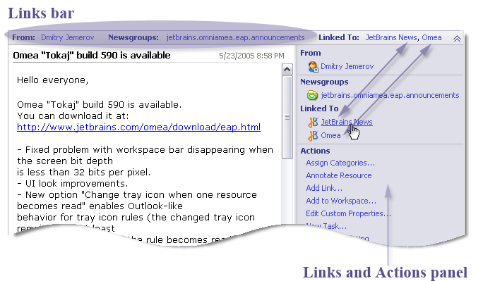

Organizing Using Links
Links are an organizing tool that can help you define and remember relationships between resources of the same or different types. Omea ReaderOmea Pro can link any resource of any supported type to any other resource of a supported type. This means that when you are viewing or focused on one resource, you can access any other resources that may be linked to it with just a mouse click.
For example, suppose you are working on a report document, and as you work you receive e-mail messages and newsgroup articles that directly relate to your work on it. You also find several Web pages that you want to refer back to from time to time as you work.
You can easily link all these other resources to the document file. You will then be able to see at a glance all the resources you may need to access to complete your work, and access any of them with just a click. The links appear after a label Linked to: that appears on the Links bar, or from the Linked to section that now appears in the Links and Actions panel. (Main window picture)
For example, suppose you are reading a newsgroup article and you remember a posting to an Atom feed that is closely related to the article, which you maybe want to quote when you reply after the meeting which you are now late for.
In Omea Reader, you can link that feed posting to the newsgroup article. You will then be able to access that feed posting with a click on the Linked to: link that now appears on the Links bar, or from the Linked to section that now appears in the Links and Actions panel. (Picture)
Automatic Links
As you work with Omea Pro you’ll notice that it creates many potentially useful links automatically. For example, the Links Bar of the Item Viewer for an e-mail message contains links to the contact records of the sender and all addressees, the Category where the message is filed (if any), and the Outlook folder of the message.
Automatically generated links in the detail header bar for an e-mail message
Automatic Links
As you work with Omea Reader you’ll notice that it creates many potentially useful links automatically. For example, the Links bar of the Item Viewer for a newsgroup article contains links to the contact records of the sender, the original article (if the current one is a reply), any replies to the article, the Category where the article is filed (if any), and the Newsgroup.
Automatically generated links in the Detail Header bar for the newsgroup article
Creating Links
In addition to the various automatic links create by Omea Reader Omea Pro, you can create your own links.
Quick Video Tutorial: How to Create a New Link
Requires Macromedia Flash Player
Basic Steps
To create a link:
- Select the resource in the Items List.
- Right-click and choose Add Link. The Resource Clipboard appears with the selected item highlighted.
- Navigate to the resource you wish to link the first item to.
- Drag the item from the Resource Clipboard to the link target item.
Creating a custom link
You can select multiple items in the Items List and all will appear in the Resource Clipboard.
You can select multiple items Resource Clipboard and drag them to the link target item.
Viewing and Navigating Links
When you create a link between two resources, a label "Linked To" appears on the Links Bar when either is viewed in the Item Viewer. This displays an in-line listing of all the resources linked to the current one. If there in not enough space for all linked resources to appear in the Linked To list, you can see all of a resource’s links in the Links and Actions pane. From there you can navigate to any of the item’s links or delete any of the links.

Linked resources show in the Links Bar and the Links and Actions panel
Custom Link Types
When you create a link by dragging a resource from the Resource Clipboard to another resource, you can specify a Link Type for the link. There is one pre-defined Link Type, Linked To which is used for all Links unless you create additional Link Types and apply one of them when creating Links. Link types appear as headings in the Links and Actions panel. They can help you to classify links in ways that are meaningful to you.
To create a custom link type:
- Select the resource which you want to use as a link and add it to the Resource Clipboard.
- Navigate to the desired item in the Items
List and drop the resource from the Resource Clipboard there.
A dialog-box opens. - In this dialog-box, click on New button to call a window for adding a new link type. By default, Linked to link already exists in the list of link types.
-
Enter the name of the new link type and click OK
button.
The new link type appears in the Links and Actions panel of the item and in the list of Link Types of the Add Link dialog-box.
Add Link dialog
Create Link Type dialog
Custom Links examples
If you want to delete the link type, call the Add Link dialog-box, select the type of link you want to delete and click Delete button. Deleting a link does not delete either of the linked resources.
Example of Custom Links
For example, you might create a link type "Mail-to-Mail" that you use whenever you link one e-mail message to another e-mail message. Then, when you see the links in the future, you will be able to tell that they link to another e-mail message as opposed to some other resource type.
For example, you might create a link type "News-to-News" that you use whenever you link one newsgroup article to another newsgroup article. Then, when you see the links in the future, you will be able to tell that they link to another newsgroup article as opposed to some other resource type.
Deleting Links
If you make a mistake creating a link, or if you no longer need a link, you can delete it.
To delete a Link:
- Locate the link in the Links Bar or the Links and Actions panel.
- Right-click on the Link and choose Delete Link on the context menu.
Be careful you don’t choose Delete instead of Delete Link, or you will delete the currently selected resource instead of the link
Deleting a link does not delete either of the linked resources.
See also: